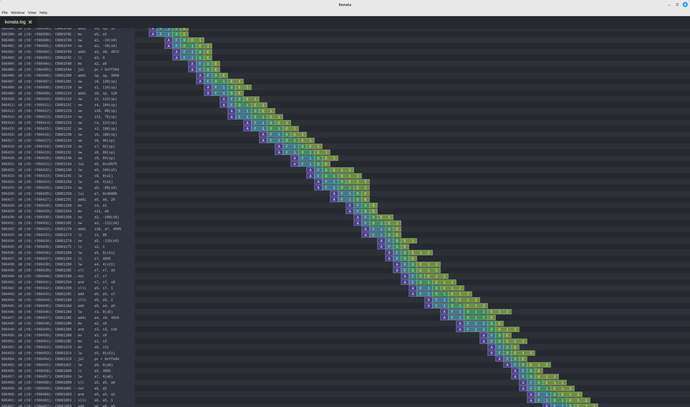

How to use
For getting started you have two options.
Either you compile it from scratch or you use our Docker container which provides all the dependencies readily installed.
Environment (Dependencies)
You will need :
A java JDK
SBT (Scala build tool)
Verilator (optional, for simulations)
RVLS / Spike dependencies (optional, if you want to have lock-step simulations checking)
GCC for RISC-V (optional, if you want to compile some code)
Docker Container
Probably the easiest way to get started:
Simply run
./run_docker.sh
Refer to the chapter about the ready made Docker container, in order to get a step by step guide on how to get started with the XFCE4 desktop and the tools provided in the installation.
Setup dependencies
Setting the tools up locally on your machine is a bit more work than just starting a Docker container, but speeds up things a lot because there's no virtual environment anymore.
For Windows Users In order to build RISC-V 64 toolchain you require GCC, so you will have to download Cygwin: https://www.cygwin.com
You should be able to install the latest GCC, as well as GIT for cloning repositories following this article: https://preshing.com/20141108/how-to-install-the-latest-gcc-on-windows
For Linux and Mac users You can get the RISC-V toolchain directly from
Java * On Linux, simply install the most recent openjdk-<version available>-jdk, using your package manager. * On MacOS you can either install openjdk with brew or download it from the official Oracle Java website * On Windows, you'll have to build https://www.royvanrijn.com/blog/2013/10/building-openjdk-on-windows) Java yourself within Cygwin
SBT Go to the release page of SBT (https://github.com/sbt/sbt/releases) Just download the tar xvf the tar file in your home directory and add $HOME/sbt/bin to your search path (PATH).
Compiling and installing Verilator
In case the package manager of your platform provides the current Verilator as a precompiled package, you can just install Verilator with you package manager, like apt-get, zypper or brew install.
In case you're on Windows or an old Debian, you'll have to compile it from the sources yourself, however.
sudo apt-get install git make autoconf g++ flex bison help2man
git clone https://github.com/verilator/verilator
unsetenv VERILATOR_ROOT # For csh; ignore error if on bash
unset VERILATOR_ROOT # For bash
cd verilator
git pull # Make sure we're up-to-date
git checkout v4.216 # You don't exactly need that version
autoconf # Create ./configure script
./configure
make
sudo make install
Compiling and installing ELFIO
Some essential headers, you'll have to install yourself on every platform basically.
# RVLS / Spike dependencies (optional, for simulations)
sudo apt-get install device-tree-compiler libboost-all-dev
# Install ELFIO, used to load elf file in the sim
git clone https://github.com/serge1/ELFIO.git
cd ELFIO
git checkout d251da09a07dff40af0b63b8f6c8ae71d2d1938d # Avoid C++17
sudo cp -R elfio /usr/include
cd .. && rm -rf ELFIO
Compiling and installing the RISC-V toolchain
On MacOS and Windows, at least, you will have to compile the toolchain yourself from scratch in the terminal of your MacOS or the Cygwin shell alternatively, if you're under Windows
(The make command will automatically make sure to check init and update any submodules needed for building the toolchain, so no recursive flag is needed. I didn't forget to add it)
git clone https://github.com/riscv/riscv-gnu-toolchain
cd riscv-gnu-toolchain
./configure --prefix=/opt/riscv --enable-multilib
make
make install
echo 'export PATH=/opt/riscv/bin:$PATH' >> ~/.bashrc
On GNU/Linux you can alternatively also download the precompiled bundle
# Getting a RISC-V toolchain (optional, if you want to compile RISC-V software)
version=riscv64-unknown-elf-gcc-8.3.0-2019.08.0-x86_64-linux-ubuntu14
wget -O riscv64-unknown-elf-gcc.tar.gz riscv https://static.dev.sifive.com/dev-tools/$version.tar.gz
tar -xzvf riscv64-unknown-elf-gcc.tar.gz
sudo mv $version /opt/riscv
echo 'export PATH=/opt/riscv/bin:$PATH' >> ~/.bashrc
Repo setup
After installing the dependencies (see above) :
git clone --recursive https://github.com/SpinalHDL/VexiiRiscv.git
cd VexiiRiscv
# (optional) Compile riscv-isa-sim (spike), used as a golden model during the sim to check the dut behaviour (lock-step)
cd ext/riscv-isa-sim
mkdir build
cd build
../configure --prefix=$RISCV --enable-commitlog --without-boost --without-boost-asio --without-boost-regex
make -j$(nproc)
cd ../../..
# (optional) Compile RVLS, (need riscv-isa-sim (spike)
cd ext/rvls
make -j$(nproc)
cd ../..
Generate verilog
sbt "Test/runMain vexiiriscv.Generate"
You can get a list of the supported parameters via :
sbt "Test/runMain vexiiriscv.Generate --help"
--help prints this usage text
--xlen <value>
--decoders <value>
--lanes <value>
--relaxed-branch
--relaxed-shift
--relaxed-src
--with-mul
--with-div
--with-rva
--with-rvc
--with-supervisor
...
Here is a list of the important parameters :
Parameter |
Description |
|---|---|
--xlen=32/64 |
Specify the CPU data width (RISC-V XLEN). 32 bits by default, can be set to 64 bits |
--with-rvm |
Enable RISC-V mul/div instruction |
--with-rvc |
Enable RISC-V compressed instruction set |
--with-rva |
Enable atomic instruction support |
--with-rvf |
Enable 32 bits floating point support |
--with-rvd |
Enable 32/64 bits floating point support |
--with-supervisor |
Enable privileged supervisor, user and MMU |
--allow-bypass-from=Int |
Specify from which execute stage the integer result bypassing is allowed. Default disabled. For performance set it to 0 |
--with-btb |
Enable Branch Target Buffer prediction |
--with-gshare |
Enable GShare conditional branch prediction. (Require the BTB to be enabled) |
--with-ras |
Enable Return Address Stack prediction. (Require the BTB to be enabled) |
--regfile-async |
The register read ports become asynchronous, shaving one stage in the pipeline, but not all FPGA support this kind of memories. |
--mmu-sync-read |
The MMU TLB memories will be implemented using memories with synchronous read ports. This allows to keep it small on FPGA which doesn't support asynchronous read ports |
--fetch-l1 |
Enable the L1 instruction cache |
--fetch-l1-ways=Int |
Set the number of instruction cache ways (4KB per way by default) |
--lsu-l1 |
Enable the L1 data cache |
--lsu-l1-ways=Int |
Set the number of data cache ways (4KB per way by default) |
--with-jtag-tap |
Enable the RISC-V JTAG debugging. |
--report-model |
This is a special arguments. When used, after the hardware generation, the whole execution pipeline model will be printed in the terminal, aswell as how each instruction integrate itself in it (timings, ressource used, ...) |
There is a lot more parameters which can be turned on.
About the --report-model, here is an example of its output :
Execute lane : lane0
- Layer : early0
- instruction : Rvi_ADD
- read integer[RS1], stage 0
- read integer[RS2], stage 0
- write integer[RD], stage 0
- completion stage 0
- decodes early0_IntAluPlugin_SEL / early0_IntAluPlugin_ALU_ADD_SUB / early0_IntAluPlugin_ALU_SLTX / early0_IntAluPlugin_ALU_BITWISE_CTRL / SrcStageables_REVERT / SrcStageables_ZERO / early0_SrcPlugin_logic_SRC1_CTRL / early0_SrcPlugin_logic_SRC2_CTRL / lane0_IntFormatPlugin_logic_SIGNED / lane0_IntFormatPlugin_logic_WIDTH_ID / lane0_integer_WriteBackPlugin_SEL / COMPLETION_AT_2 / BYPASSED_AT_2 / BYPASSED_AT_3 / execute_lane0_logic_completions_onCtrl_0_ENABLE
- instruction : Rvi_SW
- read integer[RS1], stage 0
- read integer[RS2], stage 0
- completion stage 1
- may flush up to stage 0
- dont flush from stage 1
- decodes AguPlugin_SEL / AguPlugin_LOAD / AguPlugin_STORE / AguPlugin_ATOMIC / AguPlugin_FLOAT / SrcStageables_REVERT / SrcStageables_ZERO / early0_SrcPlugin_logic_SRC1_CTRL / early0_SrcPlugin_logic_SRC2_CTRL / COMPLETION_AT_3 / execute_lane0_logic_completions_onCtrl_2_ENABLE
- instruction : Rvi_ECALL
- completion stage 0
- may flush up to stage 0
- decodes early0_EnvPlugin_SEL / early0_EnvPlugin_OP / COMPLETION_AT_2 / execute_lane0_logic_completions_onCtrl_0_ENABLE
...
Run a simulation
Important
If you take a VexiiRiscv core and use it with a simulator which does x-prop (not verilator), you will need to add the following option : --with-boot-mem-init. By default this isn't enabled, as it can degrade timings and area while not being necessary for a fully functional hardware.
Here is how you can run a Verilator based simulation, note that Vexiiriscv use mostly an opt-in configuration. So, most performance related configuration are disabled by default.
sbt
compile
Test/runMain vexiiriscv.tester.TestBench --with-mul --with-div --load-elf ext/NaxSoftware/baremetal/dhrystone/build/rv32ima/dhrystone.elf --trace-all
This will generate a simWorkspace/VexiiRiscv/test folder which contains :
test.fst : A wave file which can be open with gtkwave. It shows all the CPU signals
konata.log : A wave file which can be open with https://github.com/shioyadan/Konata, it shows the pipeline behavior of the CPU
spike.log : The execution logs of Spike (golden model)
tracer.log : The execution logs of VexRiscv (Simulation model)
Here is an example of the additional argument you can use to improve the IPC :
--with-btb --with-gshare --with-ras --decoders 2 --lanes 2 --with-aligner-buffer --with-dispatcher-buffer --with-late-alu --regfile-async --allow-bypass-from 0 --div-radix 4
Here is a screen shot of a cache-less VexiiRiscv booting linux :
Synthesis
VexiiRiscv is designed in a way which should make it easy to deploy on all FPGA. including the ones without support for asynchronous memory read (LUT ram / distributed ram / MLAB). The one exception is the MMU, but if configured to only read the memory on cycle 0 (no tag hit), then the synthesis tool should be capable of inferring that asynchronous read into a synchronous one (RAM block, work on Efinix FPGA)
By default SpinalHDL will generate memories in a Verilog/VHDL synthetisable way. Otherwise, for ASIC, you likely want to enable the automatic memory blackboxing, which will instead replace all memories defined in the design by a consistent blackbox module/component, the user having then to provide those blackbox implementation.
Currently all memories used are "simple dual port ram". While this is the best for FPGA usages, on ASIC maybe some of those could be redesigned to be single port rams instead (todo).
Other resources
There a few other ways to start using VexiiRiscv :
Using IntelliJ IDEA
IntelliJ IDEA is a Java/Scala IDE which can help a lot navigating the codebase. You can get its community edition for free. Then you just need to install the scala plugin (asked the first time you run the IDE), and open the VexiiRiscv folder with it. (See the screenshots in the Ready To Use Docker guide)
Setup
To download IntelliJ IDEA, got to https://www.jetbrains.com/idea/download, select your platform, which is either Mac, Windows or Linux, and make sure to scroll all the way down to the community edition, so that you don't download the 30 days limited trial Ultimate edition instead accidentally.
We have this script for building the Docker image, which does the downloading, unpacking and installing, all by itself: https://github.com/SpinalHDL/VexiiRiscv/blob/dev/docker/setup_intellij.sh
Known issues
The one issue is that it has a bug, and will give you a :
object Info is not a member of package spinal.core
The workaround is that you need to run the "sbt compile" command in a terminal in the VexiiRiscv folder once.
Using Konata
Konata is a Node JS application started with Electron, so you will have to install npm with your package manager of your system.
You can setup and start Konata by cloning it and using npm
The make command will execute npm electron ., which will open the Konata window
git clone https://github.com/shioyadan/konata.git
cd konata
npm install
make